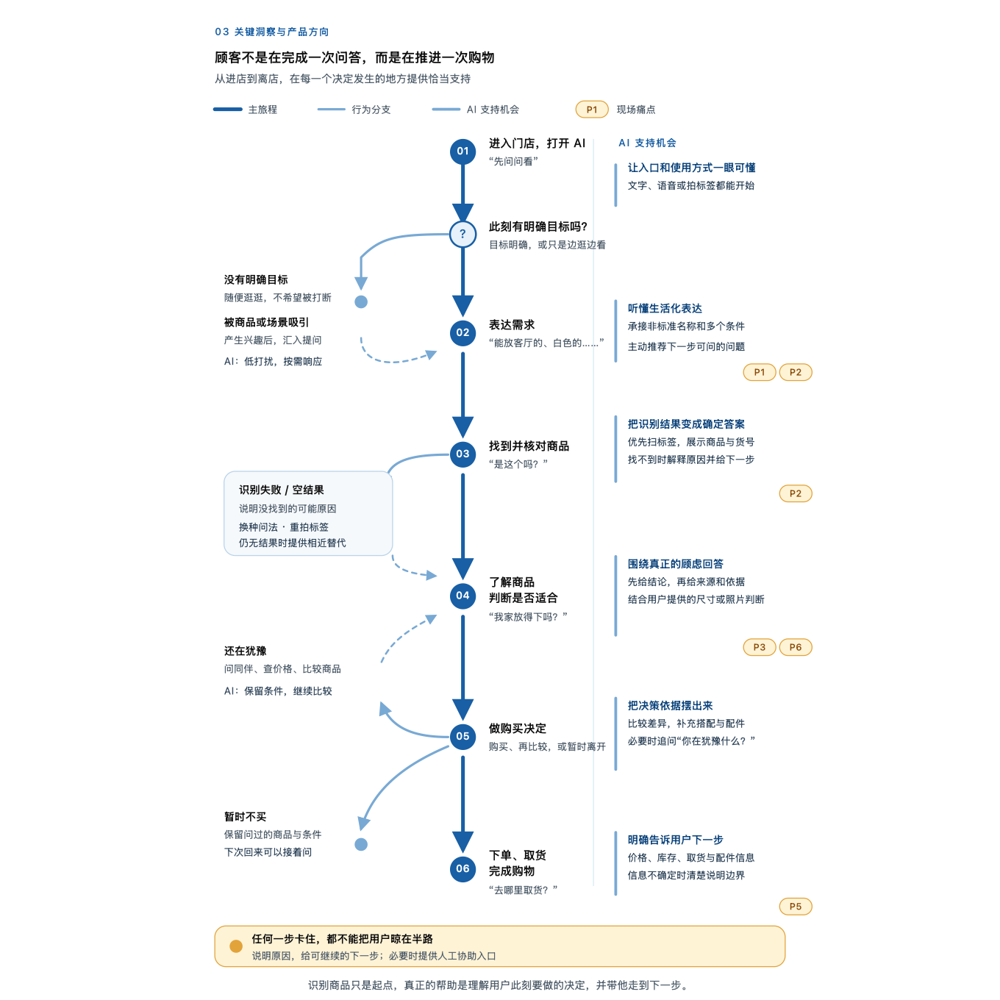

用户说生活任务，系统依赖商品 taxonomy。
“浴室好物”“这个是干什么的”无法稳定映射到内部品类和属性。
In-store Research · AI UX · Service Handoff
从真实门店测试中识别用户生活语言与系统商品语言之间的落差， 再把错误 case 转化为拍照提问、解释与人工兜底方案。
01 · RESEARCH QUESTION
我参与上海门店的实地可用性测试，观察顾客如何在真实逛店动线中拍摄商品、 表达需求、理解系统回答并继续做购买判断。研究重点不是评价单个页面， 而是识别 AI 在门店任务中的最佳介入方式和服务边界。
02 · SYNTHESIS
“浴室好物”“这个是干什么的”无法稳定映射到内部品类和属性。
预设问题先于识别结果出现，反而要求用户提前理解系统的操作方式。
用户还需要用途、适配性、比较、位置和取货信息，并在失败时知道下一步。

03 · DESIGN RESPONSE
移除相机页中竞争注意力的预设问题，把输入建立在已识别商品之上。
主流程保持轻量，通过 Info 弹窗解释识别依据和正确拍摄方式。
答案不满意或超出能力范围时，引导顾客寻找可识别的门店员工。
把不同输入方式组织为连续状态，而不是互不相关的页面片段。
04 · OUTCOME
我完成了现场素材整理、case 编码与关键问题聚类，并将顾客从进入门店、表达需求、 识别商品到购买决策的路径整理为 User Journey。后续交互方案围绕拍照优先、 解释性引导和人工服务兜底继续迭代。